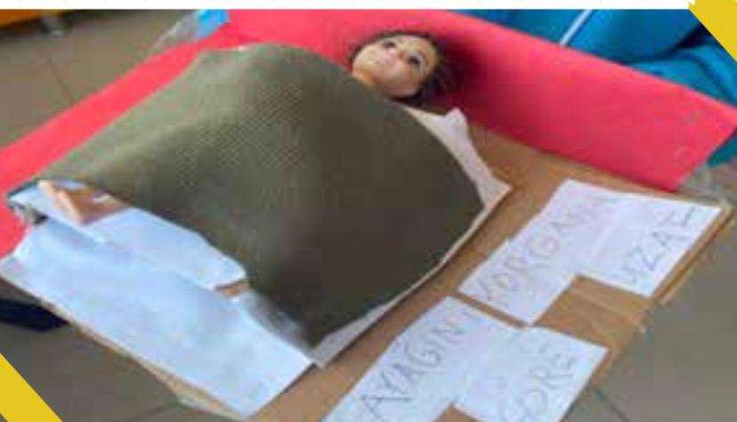
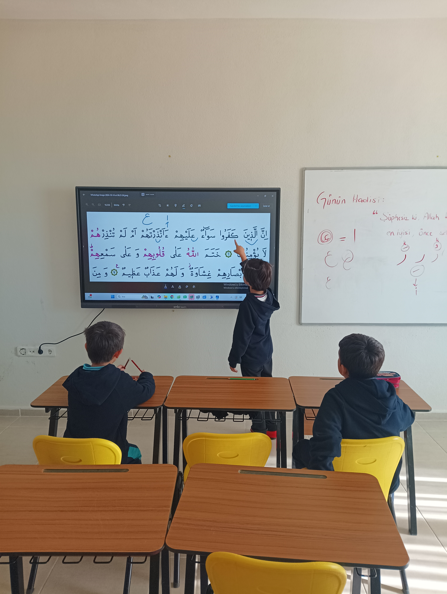

Sistemimiz
Bireysel gelişimi merkeze alan modern değerlendirme yöntemleri
Etüt Çalışmaları

Çalışan toplumlarda öğrencinin ailesi ile geçirdiği zaman kısıtlıdır. Aile evde olduğu zaman diliminde çocuğuyla kaliteli zaman geçirmek ister. Okulumuz etütlü bir okuldur. Etüt saatlerinde öğrenciler dilerlerse ödevlerini yapar ya da gün içinde yarım kalan çalışmalarını tamamlarlar.
Ayrıca etüt derslerinde öğrencilerimizle işlediğimiz konuların pekişmesi, öğrenme eksikliklerinin fark edilmesi adına çalışmalar yapıyoruz. Bireysel öğrenmeye daha çok ihtiyacı olan öğrencilerimizi tespit edip, onlar için birebir dersler planlıyoruz.
- Ödevlerin okulda tamamlanması
- Konu tekrarı ve pekiştirme
- Bireysel öğrenme ihtiyaçlarına göre destek
Öğrenme eksikliklerini tespit edip birebir dersler planlıyor, somut materyallerle kalıcı öğrenme sağlıyoruz.
Portfolyo Çalışmaları

Montessori eğitim sistemi değerlendirmeyi kendi geliştirdiği alternatif tekniklerle gerçekleştirir. Sene başında hazırbulunuşluk envanterleri oluşturulur. Müfredatın tamamını kapsayan kazanım değerlendirme ölçekleri ile dönem içi gelişim takip edilir.
Her öğrencinin kendine özel oluşturulan portfolyo dosyasında yaptığı çalışmalar biriktirilir. Öğretmen, öğrencinin hem sosyal-duygusal hem de akademik gelişimini gözlemler ve kaydeder.
- Kişisel portfolyo ve ürün dosyaları
- Kazanım değerlendirme ölçekleri
- Bireysel veli sunumları
Öğrencilerin sosyal-duygusal ve akademik gelişimleri gözlemlenerek kaydedilir ve velilere yazılı olarak sunulur.
Ödevlendirme

Ödevler, öğrenciyi aktif kılan, düşünmeye-araştırmaya sevk eden nitelikte olmalıdır. Okulumuzda Montessori eğitim felsefesine uygun olarak ödevler haftalık ve bireysel öğrenme hızlarına göre verilir. Öğrenci, ödevini kendi planlar ve zaman yönetimini öğrenir.
Ödevler K12 veli takip sistemimize işlenir. Haftalık ödevler sayesinde öğrencilere sorumluluk bilinci kazandırılır. Ödevler teslim edildiğinde öğretmen tarafından kontrol edilir ve birebir geri dönüt sağlanır.
- Haftalık bireysel ödev planlaması
- Araştırmaya teşvik eden projeler
- K12 veli takip sistemi entegrasyonu
Öğretmenler ödevleri değerlendirip anında geri dönüt verir ve öğrencilere zaman yönetimi becerisi kazandırılır.
Dijital Eğitim ve K12

Teknolojiyi eğitimin bir parçası olarak etkin kullanıyoruz. Dijital platformlar üzerinden animasyon ve simülasyon destekli konu anlatımları sunuyoruz.
Ayrıca düzenli yapılan kazanım tarama çalışmaları ile öğrencilerin akademik süreçleri yakından takip edilir. Eksik görülen kazanımlar için anında müdahale edilerek tam öğrenme sağlanır.
- Animasyonlu konu anlatımları
- Öğrenciye özel dijital ödevlendirme
- K12 üzerinden gelişim raporları
- Düzenli kazanım tarama testleri
Her hafta önceki haftaların kazanımları tarama testleri ile gözden geçirilir. Konu pekiştirme ve soru çözme çalışmaları yapılır.